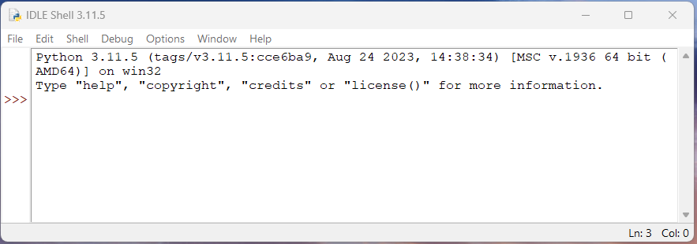
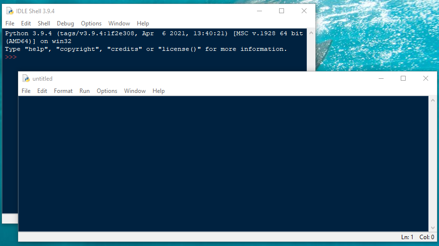
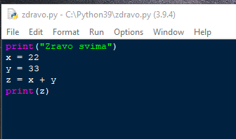
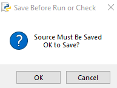
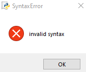
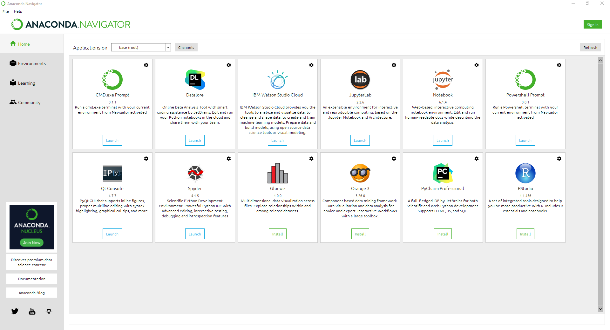
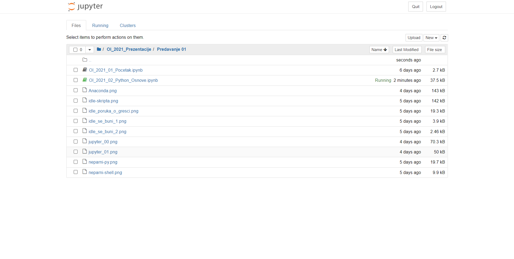
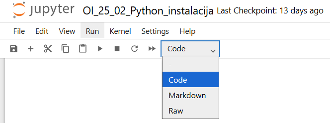

Pajton okruženje
U ovom poglavlju naučićemo kako da instaliramo i pokretenemo Pajton. Upoznaćemo se Jupyter Notebook aplikacijom, odnosno jednim okruženjem u kojem možemo da lako pišemo naše programe i videćemo kako možemo dobiti pomoć i naći druge resurse vezane za programiranje u Pajtonu.
Instalacija i pokretanje Pajtona
Za instalaciju Pythona na Windows platformi dovoljno je da preuzmete instalacioni program sa adrese https://www.python.org/downloads/windows/ i pokrenete ga.
Kada na svoj računar instalirate Python 3, dobijate i jedno jednostavno ali upotrebljivo okruženje poznato kao IDLE.
Postoji mnogo načina da se izvršava Python kod (upoznaćete još jedno na ovom kursu), IDLE je sve što vam je potrebno kada tek počinjete.
IDLE
Pokretanjem IDLE-a dobijamo prozor kao na slici
{kind=link}

Slika 1. Idle
S obzirom da je Pajton intepreter (može da izvršava liniju po liniju koda), na mestu gde se vidi >>> očekuje se da napišete prvu instrukciju. Poslednja verzija (u trenutku pisanja ovog slajda) je Python 3.11.5 .
Pa krenimo. Ukucajte
print("Ovo je moj prvi kod u Pythonu")
i pritisnite taster Enter:
print("Ovo je moj prvi kod u Pythonu")
Ovo je moj prvi kod u Pythonu
Ukucajte sada 32+12
32+12
44
Izvršavanje jedne ili više naredbi istovremeno [Skripte (.py - datoteke)]
Pokrenite IDLE, a zatim upotrebite opciju menija File... -> NewFile da otvorite nov prozor za uređivanje. Kad smo to uradili na našem računaru, dobili smo dva prozora, jedan se zove IDLE Shell, a drugi Untitled:
{kind=link}

Slika 2. Skripta
Prvi prozor koristi se za izvršavanje isečaka Pajton koda, jednu po jednu naredbu. Prozor Untitled, je prozor za uređivanje teksta, koji može da se koristi za pisanje celih Pajton programa.
Hajde da upišemo jedan mali Pajton program u drugom prozoru. Kad završite sa upisivanjem sledećeg koda, upotrebite opciju sa menija
File...-> Save As da sačuvate ovaj program pod imenom zdravo.py
Pazite da upišete kod kako ovde stoji:
{kind=link}

Šta sad? Dovoljno je da pritisnete samo taster F5 na tastaturi. Mogu se dogoditi različite stvari. Ako se vaš kod izvršava bez greške, rezultat se prikazuje u Shell-u:

Ako ste zaboravili da sačuvate kod ili promenu koda pre nego ga izvršite IDLE će se buniti. Svaki novi kod morate da sačuvate u fajl, pre nego ga pokrenete.
{kind=link}

Ako negde imate grešku sintakse, ugledaćete ovu poruku
{kind=link}

Pritisnite dugme OK, zatim pogledajte gde IDLE misli da se greška sintakse nalazi. Tražite veliki crveni okvir u prozoru za uređivanje

Jupyter notebook
Jupyter notebook je open-source web aplikacija koja nam omogućava da kreiramo i delimo dokumente koji sadrže live kod, jednačine, vizuelizaciju i narativni tekst.
Moguća je samostalna instalacija, ali mi ćemo ga preuzeti iz besplatne aplikacije Anaconda koja se može skinuti sa adrese
https://www.anaconda.com/products/individual-d
- U meniju Home nalaze se različita programerska okruženja, među kojima je i Jupyter notebook za rad u Pythonu
- U meniju Learning je odlična dokumentacija i reference kao pomoć u učenju (probajmo …)
{kind=link}

Slika 3. Anaconda
Jupyter - prvo pokretanje
Pokretanjem Jupyter notebook-a u Anacondi kreiramo u podrazumevanom browseru kontrolnu tablu za notebook-ove. Odatle možemo da kreiramo/otvaramo/povlačimo foldere/datoteke/notebook-ove i biramo jezgro (kernel).
{kind=link}

Kreiranje novog notebooka
U našem slučaju biramo u meniju New … Notebook:Python 3

Kreirana datoteka ima ekstenziju .ipynb (IPythonNotebook). Datoteku ovog tipa mogu pokrenuti i druga okruženja od kojih su najpoznatija:
PyCharm
Google Colab
Napomena: Ako u meniju New izaberemo file, možemo da kreiramo različite tekstualne datoteke. (.txt, .py, .csv … )
Jupyter Notebook ćelije
Sadržaj notebook-a uređuje se ćelijama. Ćelija se kreira preko menija i znaka +.
Tip ćelije može biti: Code, Markdown, Raw (kod, uređeni tekst, sirov tekst). Podrazumevani tip ćelije je Code. Tip ćelije se određuje iz menija Cell -> Cell Type:
{kind=link}

Pisanje teksta i izvršavanje koda u Jupyteru
Jedan klik na neaktivnu ćeliju prebacuje je u komandni mod (okvir prozora postaje plav). U edit mod prelazimo sa dva brza dvoklika na ćeliju, unutrašnjost prozora postaje siva i tada posle klika u unutrašnjost ćelije amožemo da menjamo njen sadržaj.
Iz ćelije možemo da izađemo na više načina:
Klikom na dugme ▶ u meniju ili kombinacijom tastera
Shift + Enterili preko menija. Sadržaj ćelije se tada „prevodi”/ izvršava u zavisnosti tipa ćelije.Tasterom
Escili prosto klikom u drugu ćeliju, kada nema nikakave akcije na sadržaju ćelije.
Izlaskom iz ćelije čuva se njen tip.
Sadržaj celog notebook-a i reset jezgra izvršava se pritiskom na dugme ►►
print("Zdravo svima")
Zdravo svima
Markdown ćelije
Markdown ćelija omogućava pisanje formatiranog teksta u Jupyter-u koristeći Markdown sintaksu — lagani markap jezik. To znači da možeš pisati:
naslove
podebljano / kurziv
liste
kod
matematičke izraze
linkove
slike
tabele
Kako se pravi Markdown ćelija?
U notebooku: klikneš na ćeliju, pritisneš M na tastaturi i ona postaje markdown. Ili, iz menija Cell → Cell Type → Markdown.
Primeri formatiranja
Ako u ćeliju unesemo:
Ovo je formula napisana u LaTeX-u $$\frac12 +\int_1^2\cos x\, dx$$
i prevedemo je sa ▶ dobićemo na izlazu:
Ovo je formula napisana u LaTeX-u
Ako unesemo:
Ovaj tekst sadrži `html` instrukcije: <strong><em> Ovo je vrlo važno </em></strong>.
i prevedemo sa ▶ dobijamo:
Ovaj tekst sadrži html instrukcije: Ovo je vrlo važno .
Ako u unesemo:
Ovaj tekst je u **Markdownu**. Tekst se boldira, ako se ograniči sa po dve zvezdice.
i prevedemo dobijamo:
Ovaj tekst je u Markdownu. Tekst se boldira, ako se ograniči sa po dve zvezdice.
Detaljnije informacije o uređivanju teksta u Markdown-u možete pogledati adam-p/markdown-here
Instaliranje eksternih paketa
Za korišćenje nekih modula neophodno je da prvo instaliramo/uvezemo eksterne biblioteke. Uvoženje eksterne biblioteke može se
uraditi pokretanjem pip modula iz jupyter komandne ćelije
pip install numpy- instalira biblioteku numpy koja nije deo standardnog paketa Pythona na naš računar.pip install pandas- instalira biblioteku pandas koja nije deo standardnog paketa Pythona na naš računar
Napomena: Ako Pajton instaliramo preko Anaconde, biblioteke Numpy, Pandas i Matplotlib su već instalirane
pip install numpy
Pokretanje skripti (eksternog koda)
Vratimo se u osnovni meni jupytera i kreirajmo datoteku pozdrav.py sa sledećim sadržajem:
print("Pozdrav svima")
a = 2.1
b = 34.23
c = a + b
print(c)
Datoteke oblika ime_datoteke.py zovemo skripte i možemo da ih izvršimo iz komandne ćelije (pod uslovom da su u istom folderu kao i radna ipynb datoteka ili navođenjem kompletne putanje) sa:
%run pozdrav.py`
%run pozdrav.py
Pozdrav svima
36.33
Eksterni resursi
Besplatnu pomoć u programiranju kao i veliki broj različitih podataka možemo naći na sledećim adresama:
https://www.kaggle.com pored podataka (za šta sajt primarno služi) imate niz materijala za učenje. Verovatno i najbolji izvor za sve napredne tehnike.
https://edube.org/ - platforma za učenje i pripremu testova zvanične Python sertifikacije.
Ogroman broj kurseva nalazi se na dobro poznatim obrazovnim platformama. Kursevi na ovim platformama mahom nisu besplatni.
https://www.coursera.org/ sadrzi niz početnih kurseva o Python-u. Iako se većina plaća, studenti iz Srbije uz upit mogu dobiti besplatan pristup.
Naravno, pored toga tu su forumi i platforme gde možete naći odgovore na svako pitanje koje vam padne na pamet.
https://stackoverflow.com/ je forum na kojem imate odgovore na verovatno sva pitanja koja možete postaviti tokom semestra.
sadrži puno kodova (pogledajte kakav je ovaj sajt i njegovu namenu, može vam biti koristan u budućnosti).
Ma kako zvučalo, ne zaboravite da je Google (i svi njegovi proizvodi) najbolje mesto da započnete pretragu svakog problema.
Zadaci i problemi
Zadatak 1
Покрените Jupyter notebook или JupyterLab и креирајте једну датотеку типа IPYNB. Истражујте и у датотеци креирајте ћелије са различитим садржајем (code, Markdown, LaTeX, html ). Потрудите се да датотека садржи занимљив садржај.
Датотеку назовите тако да се у њеном имену налази податак о броју индекса који ће једнозначно указивати на аутора датотеке.